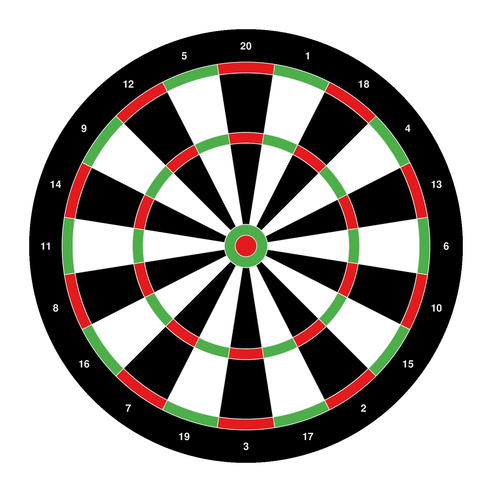

library(circlize)
factors = 1:20
circos.par("gap.degree" = 0, "cell.padding" = c(0, 0, 0, 0),
start.degree = 360/40, track.margin = c(0, 0), "clock.wise" = FALSE)
circos.initialize(factors = factors, xlim = c(0, 1))
circos.trackPlotRegion(ylim = c(0, 1), factors = factors, bg.col = "black",
track.height = 0.15)
circos.trackText(rep(0.5, 20), rep(0.5, 20),
labels = c(13, 4, 18, 1, 20, 5, 12, 9, 14, 11, 8, 16, 7, 19, 3, 17, 2, 15, 10, 6),
factors = factors, col = "#EEEEEE", font = 2,
facing = "downward")
circos.trackPlotRegion(ylim = c(0, 1), factors = factors,
bg.col = rep(c("#E41A1C", "#4DAF4A"), 10), bg.border = "#EEEEEE",
track.height = 0.05)
circos.trackPlotRegion(ylim = c(0, 1), factors = factors,
bg.col = rep(c("black", "white"), 10), bg.border = "#EEEEEE",
track.height = 0.275)
circos.trackPlotRegion(ylim = c(0, 1), factors = factors,
bg.col = rep(c("#E41A1C", "#4DAF4A"), 10), bg.border = "#EEEEEE",
track.height = 0.05)
circos.trackPlotRegion(ylim = c(0, 1), factors = factors,
bg.col = rep(c("black", "white"), 10), bg.border = "#EEEEEE",
track.height = 0.375)
draw.sector(center = c(0, 0), start.degree = 0, end.degree = 360,
rou1 = 0.1, col = "#4DAF4A", border = "#EEEEEE")
draw.sector(center = c(0, 0), start.degree = 0, end.degree = 360,
rou1 = 0.05, col = "#E41A1C", border = "#EEEEEE")
circos.clear()